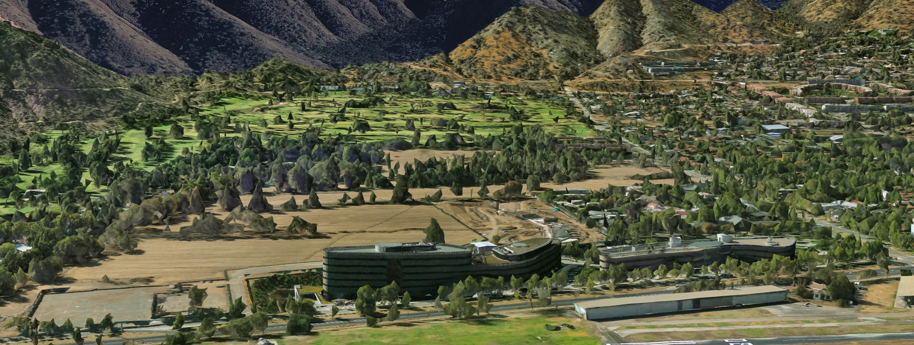
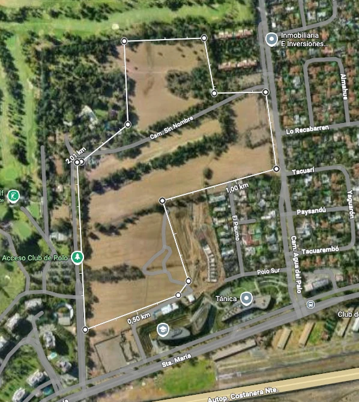
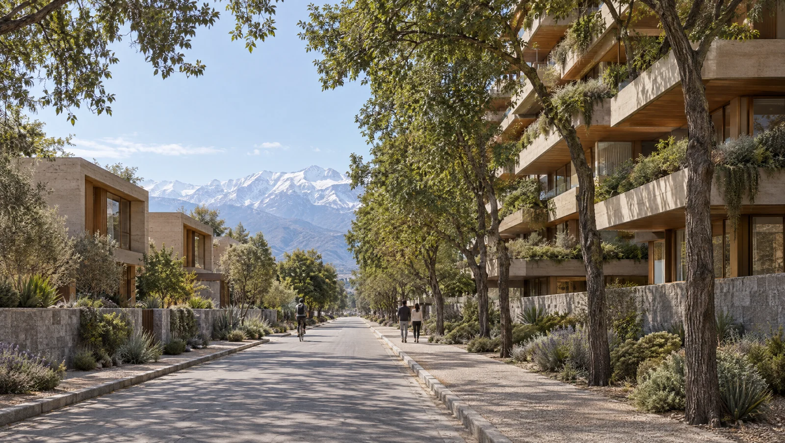
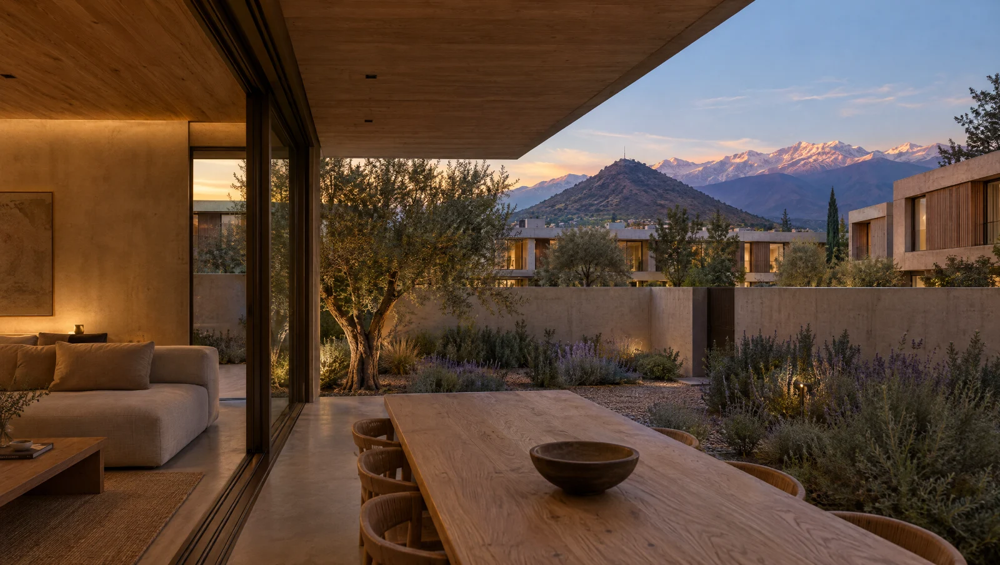

Vitacura · Santiago de Chile · Octubre 2026
Trece hectáreas continuas en Vitacura
El último paño de su tamaño en la comuna, con impacto ambiental aprobado y un solo vendedor. Un barrio de densidad media que, comprado al precio de referencia, rinde del orden de 11% real después de impuestos.
En una página
Comprar suelo al por mayor y vender barrio al detalle
La oportunidad es comprar el paño completo, urbanizarlo y desarrollar un barrio con departamentos, town houses y un centro comercial de escala vecinal, vendiendo además seis macrolotes urbanizados a otros desarrolladores. El modelo de ByC no pide al mercado nada que la comuna no haga hoy: el ritmo de venta supuesto es cerca de un quinto de lo que Vitacura absorbe.
Precio de referencia del terreno: 16 UF/m², US$91 MM por el paño. Con deuda al 50% de la inversión (obra y terreno, UF + 4%), la TIR del accionista sube a 14,0% y el capital propio máximo baja de US$134 MM a US$74 MM.
Dónde está
Entre el Club de Polo y la Costanera Norte
El paño limita al poniente con el Club de Polo y Golf, al oriente con el barrio residencial de Camino Agua del Palo, y al sur con Av. Santa María y el acceso directo a la Costanera Norte. Sus vecinos inmediatos son la Universidad Adolfo Ibáñez, el Club de Planeadores y Boragó.

Vista aérea hacia el norte. Al frente, sobre Av. Santa María, los edificios de Tánica y la Universidad Adolfo Ibáñez; detrás, el paño; a la izquierda el Club de Polo y Golf; al fondo, los cerros de Lo Curro. Imagen © Google Earth.

El activo
Veinte lotes, un solo título
130.686 m² netos con constructibilidad 1,5 y densidad de 95 viviendas por hectárea, hasta nueve pisos con Conjunto Armónico. Resolución de Calificación Ambiental aprobada por unanimidad en diciembre de 2025, parque público y vialidad ya cedidos por el vendedor, y un único vendedor al frente.
Deslinde indicativo según antecedentes del vendedor, trazado sobre imagen satelital. Sujeto a confirmación con Certificado de Informes Previos y plano de loteo. Imagen © Google.
Por qué este programa
Vale más vender menos metros, y mejores
Se evaluaron seis programas sobre el mismo paño, todos con los mismos costos, precios y ritmos de venta de la comuna. La pregunta fue cuánto valor deja cada uno en el suelo. Agotar la norma no es la respuesta: el óptimo es una mezcla de densidad media, y es una banda amplia, no un punto frágil.
Valor que cada programa deja en el suelo
Índice, programa recomendado = 100
La restricción es la constructibilidad, no la densidad
Con unidades del tamaño que compra Vitacura, las 95 viviendas por hectárea nunca se alcanzan. Ambos topes se agotan juntos solo con departamentos de unos 105 m², un producto que la comuna paga peor por metro.
La densidad máxima destruye valor
1.241 departamentos exigirían más de veinte años de venta y un producto más chico y más barato por metro: deja 28% menos valor en el suelo que el programa recomendado.
La brecha entre mayoreo y detalle
Comprar el paño entero y vender seis macrolotes urbanizados a otros desarrolladores es la palanca que más valor suma y la que acorta el plazo total de trece a diez años y medio.
El comercio se construye primero
El centro de barrio aporta poco valor directo, pero convierte un loteo al pie del cerro en un barrio desde la primera entrega, y eso es lo que sostiene la velocidad de venta.
Lo que podría ser · un ejemplo
Un barrio, no una torre
Siete edificios de ocho pisos, town houses en torno a patios, un centro de barrio anclado en un supermercado y seis macrolotes urbanizados, junto al parque público ya cedido y usando cuatro de cada cinco metros edificables. Es un ejemplo de partida, no un proyecto: quien compre el paño define el diseño, la mezcla y los productos.
 Imagen generada con IA · ejemplo referencial
Imagen generada con IA · ejemplo referencial
Imagen conceptual generada con IA por ByC a modo de ejemplo. Volumetría referencial, sujeta a proyecto de arquitectura y a permisos.
65 viviendas por hectárea sobre un máximo de 95, y 81% de la constructibilidad. En total 844 viviendas en el paño: 504 propias y unas 340 que levantan los compradores de los macrolotes.
Las piezas
Tres productos que la comuna ya compra
Departamentos para quien deja la casa grande sin dejar Vitacura; town houses para las familias que hoy buscan en La Dehesa y Lo Curro; y el comercio que hace barrio desde la primera entrega.
 Ejemplo IA
Ejemplo IADepartamentos · 18.600 UF
Siete edificios de ocho pisos con terrazas profundas, dos estacionamientos por unidad y vista a la cordillera. 120 m² útiles a 125 UF/m².
 Ejemplo IA
Ejemplo IATown houses · 25.300 UF
Casas de 220 m² en dos y tres niveles, con acceso propio y patio amurallado, agrupadas en torno a patios comunes. 115 UF/m².
 Ejemplo IA
Ejemplo IACentro de barrio · 4.000 m² arrendables
En el acceso por Av. Santa María, anclado en un supermercado de barrio. Se construye temprano, se arrienda a 0,85 UF/m² al mes y se vende estabilizado: un activo que el mercado institucional compra hoy.

Ejemplo IA
Ejemplo IAImágenes y clips generados con IA por ByC a modo de ejemplo. No representan un proyecto aprobado ni el trabajo de ningún estudio de arquitectura.
Por qué se vende
Lo que el modelo le pide al mercado, la comuna ya lo hace
El riesgo de un paño de este tamaño es la velocidad de venta. Por eso el programa se calibró con lo que Vitacura ya demostró, no con lo que la norma permite.
Hay comprador para el comercio estabilizado. En febrero de 2026 Confuturo vendió el strip center Unimarc de Santa María de Manquehue, a 2 km del paño, en US$15 MM; las corredoras ubican a los strip centers entre los activos que liderarán el apetito institucional en 2026.
El retorno
11% real, después de impuestos y sin deuda
Flujo trimestral a cien trimestres, en UF reales, con IVA, impuesto de primera categoría, contribuciones del sitio eriazo y mitigaciones viales explícitas. Al precio de referencia de 16 UF/m² por el terreno.
A dónde va cada 100 UF de venta
Programa recomendado, terreno a 16 UF/m² · 12,09 MM UF de ventas totales
El precio y la estructura
El precio del suelo decide el retorno
Cada UF/m² menos en el terreno suma cerca de un punto de TIR y unos US$3,5 MM de utilidad. La deuda que importa es la del terreno: un crédito de construcción solo sobre la obra mueve la TIR en apenas 0,2 puntos, porque se gira y se paga con cada tanda de escrituras.
TIR real según el precio pagado por el terreno
Después de impuestos · UF/m² de terreno
| UF/m² | Terreno MM US$ | TIR sin deuda | TIR acc. deuda 50% | Utilidad MM UF | Múltiplo |
|---|
Deuda 50%: crédito por la mitad del costo de construcción y la mitad del terreno, a UF + 4%. A UF + 5% la TIR del accionista baja 0,3 a 0,4 puntos.
El pago diferido del terreno es la otra palanca. Con una parte al contado y el saldo en cuotas anuales, el mismo precio nominal le cuesta menos al comprador en valor presente. La estructura se conversa en reunión.
El plazo
Capital recuperado en seis años, salida total en diez y medio
Lo que puede mover el resultado
Dónde están los riesgos, y cómo se acotan
El supuesto más pesado es el costo de obra, y no tiene aún cotización. La segunda variable es la velocidad de venta. En el escenario más adverso evaluado, la TIR baja del orden de dos puntos.
Efecto en el valor del suelo
UF/m² de terreno respecto del caso base · cada UF/m² equivale a cerca de un punto de TIR
Antes de una oferta vinculante
- Certificado de Informes Previos por lote, para confirmar constructibilidad, altura con Conjunto Armónico y uso comercial.
- Cotización de obra y urbanización con constructora: hoy 35 UF/m² en edificios, 42 en town houses y 4 UF/m² de urbanización.
- Absorción comunal desagregada (TOCTOC InfoInmobiliario, Vitacura), la variable que decide el plazo.
- Expediente de la RCA y del estudio vial: qué quedó aprobado, con qué condiciones y qué es transferible.
- Carta de interés de un supermercado ancla y sondeo de precio de los macrolotes con desarrolladores.
El siguiente paso
Vitacura no fabrica más suelo
Esta presentación resume la oportunidad. El modelo completo, los seis programas evaluados, la estructura de compra y el calendario de verificación se revisan en una reunión con el equipo de ByC.
ByC Servicios Financieros S.A. actúa como asesor de la operación. Este documento es confidencial y personal, tiene carácter informativo y preliminar, y no constituye oferta, recomendación de inversión ni asesoría legal o tributaria. Las cifras provienen del modelo de valorización de ByC, en UF reales y dólares de septiembre de 2026 (UF $40.926 · US$ $940,9), con el terreno a un precio de referencia de 16 UF/m²; están sujetas a verificación de constructibilidad municipal, costos de obra, mitigaciones viales y absorción comunal.
Las imágenes y clips del proyecto fueron generados con inteligencia artificial a modo de ejemplo: son conceptuales y referenciales, están sujetos al proyecto de arquitectura y a los permisos que correspondan, y no representan un proyecto aprobado. Las imágenes de contexto y satelitales son © Google. Copia preparada para {{PERSONA}}.
Magdalena 181, Of. 1301, Las Condes, Santiago